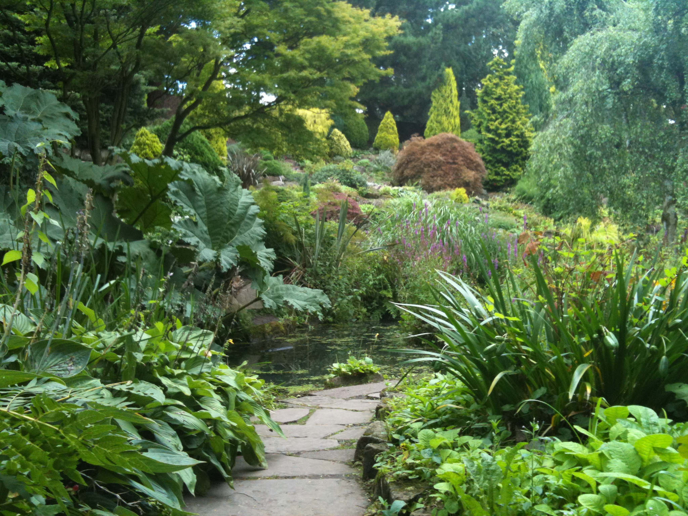

ABOUT FLETCHER MOSS PARK
The Fletcher moss park aims to be the most sustainable park in manchester that is lure for wildlife, also there is a easy access for walkers to the River Mersey.
The Personage Gardens have peace and quiet whilst the park has veriety of environments from meadow to woods to gardens. But also the park can offer recreational facilities such as tennis courts, rugby and football pitches also there are family-run café and ice cream parlour.
The main rock gardens are leid out on the south-facing slope and are sheltered from the elements, allopwing a great number of non hardy species to thrive in a micro-climate.